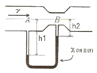
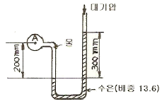
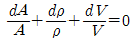
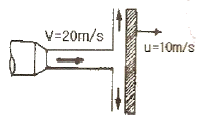
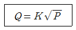

소방설비산업기사(기계) (2007-05-13 기출문제)
1과목: 소방원론
1. 다음 중 주된 연소형태가 분해연소인 것은?
- 나프탈렌
- 목재
- 목탄
- 양초
(정답률: 25%)

2. 가연성 기체 또는 액체의 연소범위에 대한 설명 중 틀린 것은?
- 연소 하한과 연소 상한의 범위를 나타낸다.
- 연소 하한이 낮을수록 발화위험이 높다.
- 염소 범위가 넓을수록 발화위험이 낮다.
- 연소 범위는 주위온도와 관계가 있다.
(정답률: 69%)
3. 내화구조의 기준에서 바닥의 경우 철골콘크리트조로서 두께가 몇 cm 이상인 것이 내화구조에 해당하는가?
- 3
- 5
- 10
- 15
(정답률: 62%)
4. 복사에 관한 Stefan-Boltzmann 의 법칙에서 흑체의 단위 표면적에서 단위 시간에 내는 에너지의 총량은 절대온도의 얼마에 비례하는가?
- 제곱근
- 제곱
- 3제곱
- 4제곱
(정답률: 89%)
5. 물은 소화약제로서 중요한 역할을 한다. 일반적으로 물의 증발잠열은 약 몇 cal/g 인가?
- 79
- 539
- 750
- 810
(정답률: 81%)
6. CO2의 증기비중은 약 얼마인가?
- 1.5
- 1.9
- 28.8
- 44.1
(정답률: 74%)
7. 연소속도와 가장 관련이 있는 것은?
- 기화속도
- 산화속도
- 착화속도
- 환원속도
(정답률: 55%)
8. 다음 중 A급 화재에 속하는 것은?
- 목재, 섬유화재
- 석유, 액화가스 화재
- 금속화재
- 전기화재
(정답률: 84%)
9. 적린의 착화 온도는 약 몇 ℃ 인가?
- 34
- 157
- 200
- 260
(정답률: 73%)
10. 안전사고의 원인으로 가장 거리가 먼 것은?
- 신체적, 기계적 악조건
- 작업자의 불완전한 행동
- 무의식적인 사고와 행동
- 작업자의 침묵
(정답률: 58%)
11. 불꽃의 색깔에 의한 온도를 측정하였을 때 낮은 온도에서부터 높은 온도의 순서로 나열한 것은?
- 암적색, 백적색, 황적색, 휘백색
- 휘백색, 암적색, 백적색, 황적색
- 암적색, 황적색, 백적색, 휘백색
- 암적색, 휘백색, 황적색, 백적색
(정답률: 86%)
12. 다음 중 방화구조가 아닌 것은?
- 두께 1.2cm 이상의 석고판 위에 석면시멘트판을 붙인 것
- 석고판 위에 회반죽을 바른 것으로 그 두게의 합계가 2.0cm 이상인 것
- 심벽에 흙으로 맞벽치기한 것
- 철망모르타르로서 그 바름두께가 2cm 이상인 것
(정답률: 24%)
13. 다음 중 증기비중이 가장 큰 물질은?
- CH4
- CO
- C6H6
- SO2
(정답률: 83%)
14. 화재원인이 되는 정전기 발생 방지법 중 틀린 것은?
- 상대습도를 높인다.
- 공기를 이온화시킨다.
- 접지시설을 한다.
- 가능한 한 부도체를 사용한다.
(정답률: 77%)
15. 연소의 3요소에 해당하지 않는 것은?
- 점화에너지
- 가연물
- 공기
- 촉매
(정답률: 87%)
16. 위험물질의 자연발화를 방지하는 방법이 아닌 것은?
- 열의축적을 방지할 것
- 저장실의 온도를 저온으로 유지할 것
- 촉매 역할을 하는 물질과 접촉을 피할 것
- 습도를 높일 것
(정답률: 74%)
17. 계단을 대신하여 사용하는 경사로를 설치할 경우 경사도는 얼마를 넘지 아니하여야 하는가?
- 1:2
- 1:4
- 1:6
- 1:8
(정답률: 40%)
18. 플래쉬 오버(flash over) 현상이란 어떤 것을 말하는가?
- 역화현상
- 탱크 밖으로 기름이 분출되는 현상
- 연소의 급속한 확대현상
- 외부에서의 연소현상
(정답률: 73%)
19. 공기 중 산소의 농도를 낮추어 화재를 진압하는 소화방법에 해당하는 것은?
- 부촉매소화
- 냉각소화
- 제거소화
- 질식소화
(정답률: 87%)
20. 위험물의 유별 성질에 관한 연결 중 옳지 않은 것은?
- 제2류 위험물 - 가연성 고체
- 제4류 위험물 - 인화성 액체
- 제5류 위험물 - 자기반응성 물질
- 제6류 위험물 - 산화성 고체
(정답률: 81%)
2과목: 소방유체역학
21. 할로겐 화합물 소화약제의 축압식 소화기에 충전하여 방사원으로 주로 사용하는 축압용 가스는?
- 브롬
- 일산화탄소
- 불소
- 질소
(정답률: 60%)
22. 직경 300mm인 원관 속을 4kg/s로 공기가 흐르고 있다. 관속의 압력은 150kPa, 온도는 21℃, 공기의 기체상수는 287J/kgㆍK라고 할 때 공기의 평균속도는 몇 m/s 인가?
- 31.8
- 42.4
- 52.2
- 62.4
(정답률: 34%)
23. 제3종 분말 소화약제로 A, B, C급 화재에 적응성이 있는 소화 약제의 주성분은?
- Na2CO3
- KHCO3
- NH4H2PO4
- NaHCO3
(정답률: 77%)
24. 다음 할론 소화약제 중 독성이 가장 약한 것은?
- 할론 1211
- 할론 1301
- 할론 2402
- 할론 104
(정답률: 63%)
25. 알콜 18리터(18×10-3m3)의 중량이 140N일 때 이 알콜의 비중은 약 얼마인가?
- 0.777
- 0.793
- 0.812
- 0.822
(정답률: 57%)
26. 소화약제에 관한 설명 중 옳지 않은 것은?
- 소화약제는 현저한 독성이나 부식성이 없어야 한다.
- 수용액 및 액체상태의 소화약제는 침전물이 발생하지 않아야 한다.
- 수용액 및 액체상태의 소화약제는 결정이 석출되고 용액의 분리가 쉬워야 한다.
- 소화약제는 열과 접촉할 때 현저한 독성이나 부식성의 가스를 발생하지 않아야 한다.
(정답률: 75%)
27. 그림과 같이 관로에 U자 관을 장치한 경우 A, B두 지점간의 압력차 PA - PB를 구하는 식을 옳게 나타낸 것은?

- 2(h2-h1)(rs-r)
- 2(h2-h1)(r-rs)
- (h1-h2)(rs-r)
- (h1-h2)(r-rs)
(정답률: 53%)
28. 소화배관 내의 유체유량 및 유속을 측정할 수 있는 기기가 아닌 것은?
- 마노미터
- 벤투리미터
- 로터미터
- 오리피스미터
(정답률: 72%)
29. 옥내소화전용 소방펌프 2대를 병렬로 연결하였다. 마찰 손실을 무시할 때 기대할 수 있는 효과는?
- 펌프의 양정은 증가하나 유량은 감소한다.
- 펌프의 유량은 증대하나 양정은 감소한다.
- 펌프의 양정은 증가한 유량과는 무관하다.
- 펌프의 유량은 증대하나 양정과는 무관하다.
(정답률: 56%)
30. 다음 열역학 관련 법칙 중 제2종 영구기관의 제작이 불가능함을 역설한 내용은?
- 열역학 제 0 법칙
- 열역학 제 1 법칙
- 열역학 제 2 법칙
- 열역학 제 3 법칙
(정답률: 77%)
31. 배관 내 중량유량 980N/s의 물이 흐른다. 직경 10cm 일 때 유체의 속도는 몇 m/s 인가?
- 9.2
- 10.3
- 12.7
- 15.2
(정답률: 68%)
32. 다음 그림에서 A점의 게이지 압력은 몇 kPa인가?

- 0.38
- 38
- 0.42
- 42
(정답률: 64%)
33. 다음 중 연속방정식이 아닌 것은? (단, A:단면적, ρ:밀도, V:속도,

- A1V1=A2V2
- r1A1V1=r2A2V2
- d(ρAV)=constant
(정답률: 50%)
34. 지름이 150cm 인 원통형 물 탱크의 수면 아래 78cm인 곳의 측벽에 지름이 20mm인 노즐을 설치하였다. 10초 후에 탱크의 수면이 25cm 강하 하였다고 하면 노즐(nozzle)을 통과한 10초 동안의 평균 유량은 몇 m3/s인가?
- 0.0342
- 0.0442
- 0.⑤7
- 0.067
(정답률: 63%)
35. 그림과 같이 평판이 u=10m/s의 속도를 움직이고 있다. 노즐에서 20m/s의 속도로 분출된 물 분류(단면적 0.02m2)가 평판에 수직으로 충돌할 때 평판이 받는 힘은?

- 1kN
- 2kN
- 3kN
- 4kN
(정답률: 80%)
36. 관속을 흐르는 물의 압력 손실이 40 kPa이고 유량이 3m3/s 이면 물이 동력 손실은 몇 kW인가?
- 120
- 214
- 88
- 157
(정답률: 58%)
37. 안지름이 5cm인 직원관에 기름이 속도 1.5m/s 의 층류로 흐른다. 관의 길이가 10m라면 압력손실은 몇 kPa인가? (단, 기름의 밀도는 1264 kg/m3, 동점성계수는 0.00117m2/s 이다.)
- 286.4
- 226.4
- 188.6
- 56.8
(정답률: 0%)
38. 유랸 6.0×10-3m3/s로 기름(비중=0.9, 점성계수=0.06 Nㆍs/m2)이 지름 80mm인 관속을 흐르고 있다. 관의 길이가 30m 라면 손실 수두는 약 몇 m인가?
- 1.2
- 5.8
- 12.1
- 14.3
(정답률: 32%)
39. 유체의 일반적 성질 및 정의로 틀린 것은?
- 액체는 온도가 상승하면 점성계수가 감소한다.
- 비압축성이고 점성이 있는 유체를 이상유체라고 한다.
- 전단력을 받았을 때 연속적으로 변형하는 물질을 유체하고 한다.
- 뉴턴유체는 유체가 흐를 때 전단응력과 속도구배를 도시하면 원점을 지나는 직선으로 표시되는 유체이다.
(정답률: 55%)
40. 단면적이 10m2이고 두께가 2.5cm인 단열재를 통과하는 열전달률이 3kW이다. 내부(고온)면의 온도가 415℃이고 단열재의 열전도도가 0.2W/mㆍK이다. 외부(저온)면의 온도는?
- 353℃
- 378℃
- 396℃
- 402℃
(정답률: 70%)
3과목: 소방관계법규
41. 특정소방대상물 중 근린생활시설에 속하지 않는 것은?
- 찜질방
- 박물관
- 치과의원
- 산후조리원
(정답률: 37%)
42. 위험물 제조소에는 보기 쉬운 곳에 기준에 따라 “위험물제조소”라는 표시를 한 표지를 설치하영야 하는데 다음 중 표지의 기준으로 적합한 것은?
- 표지의 한변의 길이는 0.3m 이상, 다른 한변의 길이는 0.6m 이상인 직사각형으로 하되 표지의 바탕은 백색으로 문자는 흑색으로 한다.
- 표지의 한변의 길이는 0.2m 이상, 다른 한변의 길이는 0.4m 이상인 직사각형으로 하되 표지의 바탕은 백색으로 문자는 흑색으로 한다.
- 표지의 한변의 길이는 0.2m 이상, 다른 한변의 길이는 0.4m 이상인 직사각형으로 하되 표지의 바탕은 흑색으로 문자는 백색으로 한다.
- 표지의 한변의 길이는 0.3m 이상, 다른 한변의 길이는 0.6m 이상인 직사각형으로 하되 표지의 바탕은 흑색으로 문자는 백색으로 한다.
(정답률: 56%)
43. 위험물안전관리법상 제1류 위험물의 성질은?
- 산화성 액체
- 가연성 고체
- 금수성 물질
- 산화성 고체
(정답률: 74%)
44. 하자보수를 하여야 하는 소방시설 중 하자보수 보증기간이 3년이 아닌 것은?
- 자동식소화기
- 비상방송설비
- 상수도소화용수설비
- 스프링클러설비
(정답률: 67%)
45. 단독경보형감지기를 설치하여야 하는 특정소방대상물에 대한 기준으로 옳은 것은?
- 연면적 500m2 미만의 숙박시설
- 연면적 500m2 미만의 기숙사
- 연면적 1000m2 미만의 아파트
- 교육연구시설 내에 있는 합숙소 또는 기숙사로서 연면적 1000m2 미만인 것
(정답률: 60%)
46. 소방자동차의 출동을 방해한 자에 대한 벌칙에 대한 기준으로 옳은 것은?
- 5년 이하의 징역 또는 3천만원 이하의 벌금
- 5년 이하의 징역 또는 1천5백만원 이하의 벌금
- 1년 이하의 징역 또는 1천만원 이하의 벌금
- 300만원 이하의 벌금
(정답률: 73%)
47. 방화대상물의 관계인이 방화관리자를 선임한 경우에는 선임한 날로부터 몇 일 이내에 소방본부장 또는 소방서장에게 신고하여야 하는가?
- 10
- 14
- 20
- 30
(정답률: 56%)
48. 다중이용업소에 설치해야 할 소방시설이 아닌 것은?
- 소화기 또는 자동확산소화용구
- 방화시설
- 피난기구
- 비상벨설비 또는 비상방송설비
(정답률: 34%)
49. 소방시설업자의 지위를 승계하고자 한다. 다음 중 그 절차로서 알맞은 것은?
- 소방본부장 또는 소방서장에게 등록하여야 한다.
- 소방본부장 또는 소방서장에게 신고하여야 한다.
- 시ㆍ도지사에게 등록하여야 한다.
- 시ㆍ도지사에게 신고하여야 한다.
(정답률: 40%)
50. 소방대상물의 관계인이 실시하는 소방훈련이 아닌 것은?
- 소화훈련
- 구조훈련
- 피난훈련
- 통보훈련
(정답률: 29%)
51. 주거지역, 상업지역 및 공업지역이 아닌 곳에 설치하는 소방용수시설은 소방대상물과 수평거리를 몇 [m] 이하가 되도록 설치하여야 하는가?
- 100
- 140
- 180
- 200
(정답률: 42%)
52. “무창츤” 이라함은 지상층 중 개구부의 면적의 합계가 당해 층의 바닥면적의 얼마 이하가 되는 층을 말하는가?
- 10분의 1
- 20분의 1
- 30분의 1
- 50분의 1
(정답률: 71%)
53. 가연성액체류의 수량이 몇 m3 이상의 경우 화재의 확대가 빠른 특수가연물로 보는가?
- 1
- 2
- 10
- 20
(정답률: 40%)
54. 다음 중 화재경계지구의 지정대상이 아닌 것은?
- 대형화재 및 대형재난 발생지역
- 공장ㆍ창고가 밀집한 지역
- 목조건물이 밀집한 지역
- 위험물저장 및 처리시설이 밀집한 지역
(정답률: 71%)
55. 다음 중 화재 경계지구의 지정대상지역 등에 대한 설명 중 옳지 않은 것은?
- 위험물 처리시설이 밀집한 지역은 대상이 된다.
- 소방용수시설 또는 소방출동로가 있는 지역은 대상이 된다.
- 소방본부장은 소방대상물의 위치ㆍ구조 및 설비 등에 대한 소방검사를 연 1회 이상 실시하여야 한다.
- 소방서장은 소방훈련을 실시하고자 하는 때에는 화재경계지구 안의 관계인에게 훈련 10일전까지 그 사실을 통보하여야 한다.
(정답률: 58%)
56. 소방시설관리업의 등록기준 중 이산화탄소소화설비의 장비기준이 아닌 것은?
- 토크렌치
- 절연저항계
- 캡 스퍼너
- 전류전압측정계
(정답률: 67%)
57. 다음 중 소방기본법에 의한 소방용어의 정의 중 옳지 않은 것은?
- “소방대상물”이라 함은 건축물, 차량, 선박, 선박건조 구조물, 산림 그 밖의 공작물 또는 물건을 말한다.
- “관계지역”이라 함은 소방대상물이 있는 장소 및 그 이웃지역으로서 화재의 예방ㆍ경계ㆍ진압, 구조ㆍ구급 등의 활동에 필요한 지역을 말한다.
- “관계인”이라 함은 소방대상물의 소유자ㆍ관리자 또는 취급자를 말한다.
- “소방대장”이라 함은 소방본부장 또는 소방서장 등 화재, 재난ㆍ재해 그 밖의 위급한 상황이 발생한 현장에서 소방대를 지휘하는 자를 말한다.
(정답률: 78%)
58. 소방본부장 또는 소방서장은 ㅗ바검사를 하고자 할 때에는 몇 시간 전에 관계인에게 알려야 하는가?
- 12
- 24
- 36
- 48
(정답률: 60%)
59. 관할소방서장의 승인을 받아 지정수량 이상의 위험물을 임시로 저장ㆍ취급 할 수 있는 기간은 몇 일 이내이어야 하는가?
- 30
- 60
- 90
- 120
(정답률: 78%)
60. 연면적이 1500m2인 지하가(터널을 제외)에 설치하지 않아도 되는 소방시설은?
- 스프링클러설비
- 옥외소화전설비
- 제연설비
- 무선통신보조설비
(정답률: 42%)
4과목: 소방기계시설의 구조 및 원리
61. 이산화탄소 소화설비에 있어 소화약제 저장용기의 설치장소로 틀린 것은?
- 온도가 70℃ 이하인 장소
- 방호구역 외의 장소
- 직사광선 빗물이 침투할 우려가 없는 장소
- 방화문으로 구획된 장소
(정답률: 52%)
62. 소화기구의 화재안전기준에서 대형 수동식소화기를 설치하여야 할 소방대상물의 부분에 옥내소화전이 법적으로 유효하게 설치된 경우 유효범위 내에서 대형 수동식소화기 설치기준으로 맞는 것은?
- 1/3을 감소할 수 있다.
- 1/2을 감소할 수 있다.
- 2/3를 감소할 수 있다.
- 설치하지 않을 수 있다.
(정답률: 56%)
63. 물분무소화설비의 화재안전기준에서 물분무 소화설비의 가압송수장치 고가수조에 설치하지 아니하여도 되는 것은?
- 수위계
- 압력계
- 맨 홀
- 오버플로우관
(정답률: 56%)
64. 이산화탄소소화설비의 화재안전기준에서 전역방출방식의 이산화탄소소화설비 저압식을 제외한 분사헤드의 방사압력은 몇 MPa(kg/cm2)이상인가?
- 0.2 MPa(2kg/cm2)
- 0.9 MPa(9kg/cm2)
- 1.25MPa(12.5kg/cm2)
- 2.1MPa(21kg/cm2)
(정답률: 50%)
65. 다음 중 피난기구가 아닌 것은?
- 피난사다리
- 완강기
- 피난밧줄
- 방송설비
(정답률: 95%)
66. 할로겐화합물소화설비의 화재안전기준에서 전역 방출방식인 할론 1301 소화약제를 분사하는 분사헤드의 방사압력은 얼마 이상인가?
- 0.2 MPa(2kg/cm2)
- 0.1 MPa(1kg/cm2)
- 0.9 MPa(9kg/cm2)
- 1.0 MPa(10kg/cm2)
(정답률: 56%)
67. 스프링클러설비의 화재안전기준에서 스프링클러 설비에 사용되는 펌프기동용 압력챔버의 용적은 얼마 이상이어야 하는가?
- 100 ℓ
- 200 ℓ
- 300 ℓ
- 400 ℓ
(정답률: 58%)
68. 피난사다리의 형식승인 및 검정기술기준에서 피난사다리의 종류로 분류되지 않는 것은?
- 고정식 사다리
- 올림식 사다리
- 내림식 사다리
- 굴절식 사다리
(정답률: 65%)
69. 소화기구의 화재안전기준에서 수동식 소화기는 각 층마다 설치하여야 한다. 대형수동식 소화기를 설치하는 경우 소방 대상물의 각 부분으로부터 1개의 대형수동식 소화기구까지의 보행거리는 얼마 이내로 배치하여야 하는가?
- 10 m
- 20 m
- 30 m
- 40 m
(정답률: 75%)
70. 옥외소화전설비의 화재안전기준에서 소화전함은 옥외소화전마다 그로부터 몇 미터 이내dml 장소에 설치하여야 하는가?
- 5 m
- 10 m
- 15 m
- 20 m
(정답률: 50%)
71. 포소화설비의 화재안전기준에서 포 소화약제의 혼합장치 방식이 아닌 것은?
- 펌프 푸로포셔너
- 프레져 푸로포셔너
- 프레져 아우트 푸로포셔너
- 프레져 사이드 푸로포셔너
(정답률: 75%)
72. 교축 기구를 이용해서 그의 전후 압력차로부터 유량을 구하는 오리피스, 벤투리관 유량계는 어떤 원리를 이용한 것인가?
- 베르누이 정리
- 파스칼의 원리
- 토리첼리의 원리
- 아르키메데스의 원리
(정답률: 60%)
73. 다음 식은 스프링클러헤드의 형식승인 및 검정기술기준에서 스프링클러 헤드의 시험상 필요한 공식이다. 어느 시험에 적용되는가?

- 살수분포시험
- 방수량시험
- 수격시험
- 진동시험
(정답률: 88%)
74. 옥내소화전설비의 화재안전기준에서 옥내소화전 방수구는 소방대상물의 층마다 설치하되 당해 소방대상물의 각 부분으로부터 하나의 옥내소화전 방수구까지의 수평거리는 호스릴 옥내소화전설비의 경우 몇 m 이하가 되도록 하여야 하는가?
- 5m
- 10m
- 15m
- 25m
(정답률: 41%)
75. 제연설비의 화재안전기준에서 하나의 제연구역 면적으로 맞는 것은?
- 600 m2 이내
- 800 m2 이내
- 1000 m2 이내
- 1200 m2 이내
(정답률: 66%)
76. 물분무소화설비의 화재안전기준에서 물분무소화설비를 한 차고, 주차장에 있어서 수원은 그 저수량이 바닥면적 1m2에 대하여 몇 ℓ/min으로 20분간 방수할 수 있는 양 이상으로 하여야 하는가?
- 10ℓ/min
- 20ℓ/min
- 30ℓ/min
- 40ℓ/min
(정답률: 60%)
77. 분말소화설비의 화재안전기준에서 분말소화약제의 저장용기를 설치할 때 가압식 안전밸브의 작동압력은 얼마인가?
- 내압시험압력의 0.8배 이하
- 내압시험압력의 1.8배 이하
- 최고시험압력의 0.8배 이하
- 최고시험압력의 1.8배 이하
(정답률: 46%)
78. 연결송수관설비의 화재안전기준에서 연결송수관설비의 배관을 설치할 때 습식 설비로 해야 하는 소방대상물은?
- 지면으로부터 높이가 48m 이상인 소방대상물 또는 7층이상인 소방대상물
- 지면으로부터 높이가 48m 이상인 소방대상물 또는 11층이상인 소방대상물
- 지면으로부터 높이가 31m 이상인 소방대상물 또는 7층이상인 소방대상물
- 지면으로부터 높이가 31m 이상인 소방대상물 또는 11층이상인 소방대상물
(정답률: 50%)
79. 연결송수관설비의 화재안전기준에서 높이 70m 이상의 소방대상물에 연결송수관설비의 가압송수장치를 설치할 때 펌프의 양정은 최상층에 설치된 노즐선단의 압력이 몇 MPa(kg/cm2) 이상이 되어야 하는가?
- 0.35 MPa(3.5kg/cm2)
- 0.25 MPa(2.5kg/cm2)
- 0.15 MPa(1.5kg/cm2)
- 0.45 MPa(4.5kg/cm2)
(정답률: 45%)
80. 상수도소화용수설비의 화재안전기준에서 소화전은 소방대상물의 수평 투영면의 각 부분으로부터 몇 m 이하가 되도록 설치하여야 하는가?
- 120 m
- 130 m
- 140 m
- 150 m
(정답률: 73%)